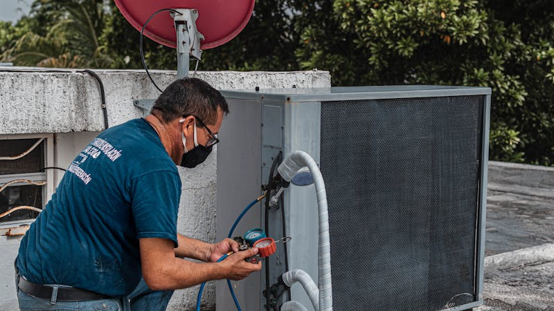

Freon R32 vs R410A vs R22: Mana yang Terbaik?

Pemilihan jenis freon yang tepat sangat penting untuk performa AC dan kelestarian lingkungan. Berikut perbandingan lengkap:
📊 Tabel Perbandingan
| Jenis Freon | Eficiency | Lingkungan | Kompatibilitas |
|---|---|---|---|
| R-32 | ★★★★★ | ★★★★★ | AC terbaru |
| R-410A | ★★★☆☆ | ★★★☆☆ | AC modern |
| R-22 | ★★☆☆☆ | ★☆☆☆☆ | AC lama |
🔵 R-32: Pilihan Terbaik Masa Depan
- GWP (Global Warming Potential): Rendah - hanya 675
- Eisiensi: Sangat tinggi, lebih hemat listrik
- Kompatibilitas: AC inverter terbaru
- Ketersediaan: Mulai umum di Indonesia
- Kelemahan: Mildly flammable (A2L)
🟡 R-410A: Standar Industri Saat Ini
- GWP: Sedang - 2.088
- Eisiensi: Baik namun di bawah R-32
- Kompatibilitas: AC era 2010-2023
- Ketersediaan: Sangat umum
- Kekuatan: Tidak mudah terbakar
🔴 R-22: Mulai Dihindari
- GWP: Tinggi - 1.810
- Eisiensi: Rendah
- Kompatibilitas: AC lama (< 2010)
- Ketersediaan: Semakin mahal dan langka
- Masalah: Mengandung CFC,止被禁止 secara global
💡 Rekomendasi
Untuk AC baru, pilih dengan freon R-32. Untuk AC lama dengan R-22, pertimbangkan untuk diganti saja karena:
- Suku cadang R-22 semakin mahal
- Efisiensi R-32 jauh lebih baik
- Ramah lingkungan
Butuh Isi Freon?
AClean melayani isi ulang freon semua jenis. Gratis ongkos kirim Tangerang Selatan!
Hubungi Kami →